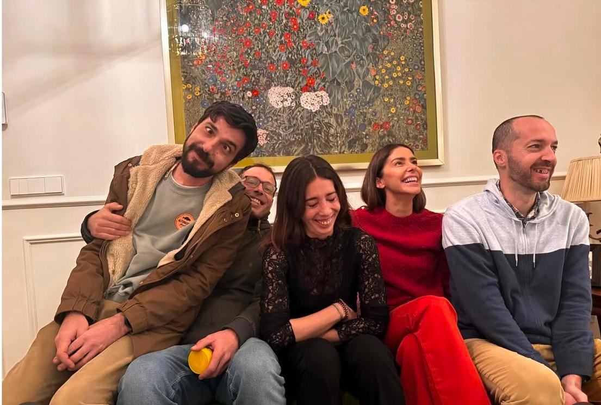

Reencuentros Navideños
Esta Navidad ha sido especialmente emotiva para la familia Cifuentes, ya que cinco hermanos lograron reunirse después de varios años separados. En la conmovedora fotografía que acompaña esta noticia, se puede ver a los hermanos sentados compartiendo risas. Los hermanos, que ahora viven en diferentes ciudades, no habían tenido la oportunidad de estar juntos en más de cinco años debido a diversas circunstancias personales y profesionales. Sin embargo, este año decidieron que era el momento perfecto para reencontrarse y celebrar juntos. El reencuentro fue lleno de momentos memorables con el intercambio de anécdotas y regalos. Cada hermano aportó algo especial, reflejando sus experiencias y vidas en lugares distintos. La alegría y la nostalgia se mezclaron en cada rincón del hogar familiar, recordándoles lo importante que es la unión y el amor fraternal. Este reencuentro no solo subraya la importancia de la familia en tiempos festivos, sino también la fuerza de los lazos que, a pesar de la distancia y el tiempo, permanecen intactos y llenos de cariño. Los Cifuentes han demostrado que, sin importar los desafíos, siempre hay un lugar en casa para compartir y celebrar juntos. Los hermanos se comprometieron a no dejar pasar tanto tiempo antes de su próxima reunión, recordando que los mejores momentos de la vida son aquellos compartidos con los seres queridos.